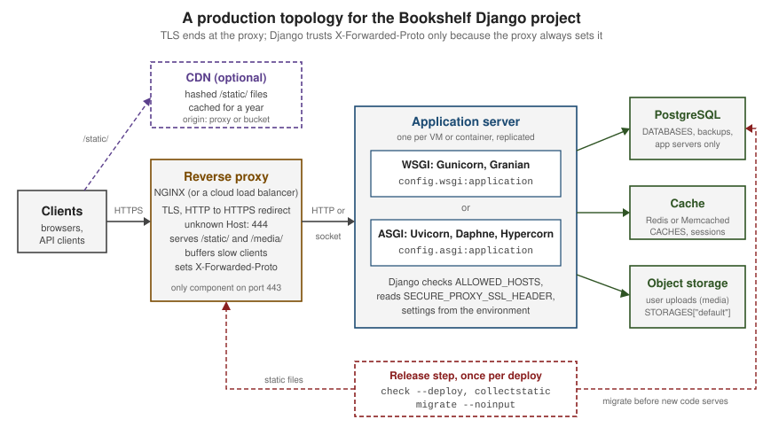

Deployment
|
This content was generated with the assistance of AI and should be verified against the official documentation before being relied on in production. |
This page is written against Django 6.1 (6.1.1 on PyPI, released 2026-09-02; 6.1.2 is scheduled for 2026-10-06), Python
3.12-3.14 and PostgreSQL 15 or newer, all checked on 2026-10-03; where Django 5.2 LTS behaves differently the text says
so. The servers were the PyPI releases of the same day: Gunicorn 26.2.0, Granian 2.8.4, uWSGI 2.0.31, Uvicorn 0.54.0 with
uvicorn-worker 0.4.0, Daphne 4.2.3, Hypercorn 0.18.0 and WhiteNoise 6.12.0. Every command was run in a scratch
Bookshelf project on Python 3.13 and Django 6.1.1 with SQLite: manage.py check --deploy --fail-level WARNING passes
with the production environment variables set, five tests pass, and each of the nine server invocations shown here was
started and answered a curl to the project’s health endpoint. Two things could not be run on the test machine and are
described from their official documentation only: NGINX (not installed, so the proxy’s headers were sent with curl
instead) and Apache with mod_wsgi. runserver is a development tool. In production a Django project needs an
application server that speaks WSGI or ASGI, usually a reverse proxy in front of it that terminates TLS and serves
files, settings that come from the environment rather than from the repository, and a release routine that collects
static files, checks the configuration and migrates the database before new code takes traffic. This page walks through
each of those pieces with the Bookshelf project that grows across this section, and then goes through the official
deployment checklist item by item.
In a hurry: what goes where
| Need | Rule of thumb | Section |
|---|---|---|
Pick an application server |
Synchronous project: Gunicorn (or Granian) on |
|
Size the server |
Start from |
|
Put something in front |
NGINX (or the platform’s load balancer) for TLS, HTTP-to-HTTPS, slow-client buffering, Host filtering and files. |
|
Make HTTPS visible to Django |
|
Telling Django about the proxy: SECURE_PROXY_SSL_HEADER and friends |
Serve static and media files |
|
|
Check the configuration |
|
Run manage.py check --deploy, The deployment checklist, item by item |
Keep secrets out of Git |
|
|
Migrate safely |
Run |
|
Tell the platform you are alive |
A cheap |
|
Choose where to run it |
VM with systemd, containers on Cloud Run, App Service, ECS/Fargate or Kubernetes: the Django part is the same. |
The production topology
A browser never talks to Django directly. A request passes through, in order, a DNS name and possibly a CDN, a reverse proxy or load balancer that owns port 443, an application server process, and only then Django’s handler, which runs the middleware stack and the view (the steps inside Django are in The Request/Response Cycle). The figure shows the layout this page builds:

Each box has one job, and each job maps to a group of settings:
-
Reverse proxy. Terminates TLS, redirects plain HTTP, refuses requests for host names it does not serve, buffers slow clients so that an application worker is not tied up while a phone uploads a file over a weak connection, and serves
/static/and/media/from disk. It tells Django the original scheme withX-Forwarded-Proto, which Django only believes because ofSECURE_PROXY_SSL_HEADER. -
Application server. Starts and supervises Python processes, accepts HTTP from the proxy and calls Django’s
applicationobject, either through WSGI (one request per worker thread) or ASGI (an event loop per process). -
Django. Validates the
Hostheader againstALLOWED_HOSTS, applies the security settings, and reads everything that differs between environments (SECRET_KEY,DATABASES,CACHES,MAILERS) from the environment. -
Backing services. PostgreSQL (with backups), a shared cache (the default local-memory cache is per process), and, when there is more than one application host, object storage for user uploads.
-
Release step. Runs once per deployment, not once per process:
check --deploy,collectstaticandmigrate.
Source: How to deploy Django and Deployment checklist
The running example
The scratch project is a cut-down Bookshelf: a config project package and a catalog app with one model. Its
settings module is written for production from the start. Every value that changes between a laptop, CI and production
is read from an environment variable; values that must never have a default (the secret key) raise
ImproperlyConfigured when missing, so a misconfigured process refuses to start instead of starting insecurely. Only
the standard library is used, so the pattern works whatever loader you choose later (see Environment-driven settings).
"""Bookshelf settings: every value that differs between environments comes from the environment."""
import os
from pathlib import Path
from django.core.exceptions import ImproperlyConfigured
BASE_DIR = Path(__file__).resolve().parent.parent
def env(name, default=None):
value = os.environ.get(name, default)
if value is None:
raise ImproperlyConfigured(f"Set the {name} environment variable.")
return value
def env_bool(name, default="false"):
return env(name, default).strip().lower() in {"1", "true", "yes", "on"}
def env_list(name, default=""):
return [item.strip() for item in env(name, default).split(",") if item.strip()]
# Critical settings ---------------------------------------------------------
SECRET_KEY = env("DJANGO_SECRET_KEY") # no default: fail fast if it is missing
SECRET_KEY_FALLBACKS = env_list("DJANGO_SECRET_KEY_FALLBACKS")
DEBUG = env_bool("DJANGO_DEBUG")
# Environment-specific settings ---------------------------------------------
ALLOWED_HOSTS = env_list("DJANGO_ALLOWED_HOSTS")
CSRF_TRUSTED_ORIGINS = env_list("DJANGO_CSRF_TRUSTED_ORIGINS")
INSTALLED_APPS = [
"django.contrib.admin",
"django.contrib.auth",
"django.contrib.contenttypes",
"django.contrib.sessions",
"django.contrib.messages",
"django.contrib.staticfiles",
"catalog",
]
MIDDLEWARE = [
"django.middleware.security.SecurityMiddleware",
"whitenoise.middleware.WhiteNoiseMiddleware",
"django.contrib.sessions.middleware.SessionMiddleware",
"django.middleware.common.CommonMiddleware",
"django.middleware.csrf.CsrfViewMiddleware",
"django.contrib.auth.middleware.AuthenticationMiddleware",
"django.contrib.messages.middleware.MessageMiddleware",
"django.middleware.clickjacking.XFrameOptionsMiddleware",
]
ROOT_URLCONF = "config.urls"
TEMPLATES = [
{
"BACKEND": "django.template.backends.django.DjangoTemplates",
"DIRS": [BASE_DIR / "templates"],
"APP_DIRS": True,
"OPTIONS": {
"context_processors": [
"django.template.context_processors.request",
"django.contrib.auth.context_processors.auth",
"django.contrib.messages.context_processors.messages",
],
},
},
]
WSGI_APPLICATION = "config.wsgi.application"
DATABASES = {
"default": {
"ENGINE": env("DJANGO_DB_ENGINE", "django.db.backends.sqlite3"),
"NAME": env("DJANGO_DB_NAME", str(BASE_DIR / "db.sqlite3")),
"USER": env("DJANGO_DB_USER", ""),
"PASSWORD": env("DJANGO_DB_PASSWORD", ""),
"HOST": env("DJANGO_DB_HOST", ""),
"PORT": env("DJANGO_DB_PORT", ""),
"CONN_MAX_AGE": int(env("DJANGO_CONN_MAX_AGE", "0")),
"CONN_HEALTH_CHECKS": True,
}
}
CACHES = {
"default": {
"BACKEND": env("DJANGO_CACHE_BACKEND", "django.core.cache.backends.locmem.LocMemCache"),
"LOCATION": env("DJANGO_CACHE_LOCATION", ""),
}
}
MAILERS = {
"default": {
"BACKEND": env("DJANGO_EMAIL_BACKEND", "django.core.mail.backends.smtp.EmailBackend"),
"OPTIONS": {
"host": env("DJANGO_EMAIL_HOST", "localhost"),
"port": int(env("DJANGO_EMAIL_PORT", "587")),
"username": env("DJANGO_EMAIL_USER", ""),
"password": env("DJANGO_EMAIL_PASSWORD", ""),
"use_tls": env_bool("DJANGO_EMAIL_USE_TLS", "true"),
},
},
}
DEFAULT_FROM_EMAIL = env("DJANGO_DEFAULT_FROM_EMAIL", "bookshelf@example.com")
SERVER_EMAIL = env("DJANGO_SERVER_EMAIL", "errors@example.com")
AUTH_PASSWORD_VALIDATORS = [
{"NAME": "django.contrib.auth.password_validation.UserAttributeSimilarityValidator"},
{"NAME": "django.contrib.auth.password_validation.MinimumLengthValidator"},
{"NAME": "django.contrib.auth.password_validation.CommonPasswordValidator"},
{"NAME": "django.contrib.auth.password_validation.NumericPasswordValidator"},
]
LANGUAGE_CODE = "en-us"
TIME_ZONE = "UTC"
USE_I18N = True
USE_TZ = True
# Static and media files ----------------------------------------------------
STATIC_URL = env("DJANGO_STATIC_URL", "static/")
STATIC_ROOT = Path(env("DJANGO_STATIC_ROOT", str(BASE_DIR / "staticfiles")))
MEDIA_URL = env("DJANGO_MEDIA_URL", "media/")
MEDIA_ROOT = Path(env("DJANGO_MEDIA_ROOT", str(BASE_DIR / "media")))
STORAGES = {
"default": {"BACKEND": "django.core.files.storage.FileSystemStorage"},
"staticfiles": {"BACKEND": "whitenoise.storage.CompressedManifestStaticFilesStorage"},
}
# HTTPS behind a reverse proxy ----------------------------------------------
if env_bool("DJANGO_BEHIND_TLS_PROXY"):
SECURE_PROXY_SSL_HEADER = ("HTTP_X_FORWARDED_PROTO", "https")
USE_X_FORWARDED_HOST = env_bool("DJANGO_USE_X_FORWARDED_HOST")
SECURE_SSL_REDIRECT = env_bool("DJANGO_SECURE_SSL_REDIRECT", str(not DEBUG))
SECURE_REDIRECT_EXEMPT = [r"^healthz/$"]
SESSION_COOKIE_SECURE = not DEBUG
CSRF_COOKIE_SECURE = not DEBUG
SECURE_HSTS_SECONDS = int(env("DJANGO_SECURE_HSTS_SECONDS", "0"))
SECURE_HSTS_INCLUDE_SUBDOMAINS = env_bool("DJANGO_SECURE_HSTS_INCLUDE_SUBDOMAINS")
SECURE_HSTS_PRELOAD = env_bool("DJANGO_SECURE_HSTS_PRELOAD")
# Error reporting -----------------------------------------------------------
ADMINS = env_list("DJANGO_ADMINS")
LOGGING = {
"version": 1,
"disable_existing_loggers": False,
"handlers": {"console": {"class": "logging.StreamHandler"}},
"root": {"handlers": ["console"], "level": env("DJANGO_LOG_LEVEL", "INFO")},
}
DEFAULT_AUTO_FIELD = "django.db.models.BigAutoField"Three details of this file come back later. SECURE_REDIRECT_EXEMPT keeps /healthz/ reachable over plain HTTP, because
load balancers usually probe the application directly and without TLS (Health checks and graceful restarts). SECURE_PROXY_SSL_HEADER is only
set when the operator says a TLS proxy is in front (Telling Django about the proxy: SECURE_PROXY_SSL_HEADER and friends). And DEBUG defaults to off: a forgotten
variable gives you a secure, slightly inconvenient process rather than an insecure one. The settings module itself, the
split-settings alternatives and the full DATABASES reference are in
Settings & Configuration.
The views are the minimum a deployment needs: a liveness probe, a readiness probe that reaches the database, a diagnostic view that shows what Django believes about the request once the proxy settings apply, and one real page.
from django.db import connection
from django.http import JsonResponse
from django.views.decorators.http import require_GET
from .models import Book
@require_GET
def healthz(request):
"""Liveness: the process answers. Touches nothing else."""
return JsonResponse({"status": "ok"})
@require_GET
def readyz(request):
"""Readiness: the process can reach its database."""
try:
with connection.cursor() as cursor:
cursor.execute("SELECT 1")
except Exception:
return JsonResponse({"status": "unavailable"}, status=503)
return JsonResponse({"status": "ready"})
@require_GET
def request_info(request):
"""What Django believes about the request after the proxy settings apply."""
return JsonResponse(
{
"scheme": request.scheme,
"is_secure": request.is_secure(),
"host": request.get_host(),
"url": request.build_absolute_uri(),
}
)
@require_GET
def book_list(request):
books = Book.objects.order_by("title").values("id", "title", "author")
return JsonResponse({"books": list(books)})from django.contrib import admin
from django.urls import path
from catalog import views
urlpatterns = [
path("admin/", admin.site.urls),
path("healthz/", views.healthz, name="healthz"),
path("readyz/", views.readyz, name="readyz"),
path("request-info/", views.request_info, name="request-info"),
path("books/", views.book_list, name="book-list"),
]Source: HttpRequest.is_secure(), HttpRequest.get_host() and require_GET
In a real project request-info/ would be removed or restricted to staff: it exists here to make the proxy settings
observable. The secret key used in the scratch project was generated, never typed, and lives only in a shell variable:
$ export DJANGO_SECRET_KEY="$(python -c 'from django.core.management.utils import get_random_secret_key; print(get_random_secret_key())')"
$ export DJANGO_ALLOWED_HOSTS=bookshelf.example.com,localhost,127.0.0.1
$ export DJANGO_BEHIND_TLS_PROXY=true
$ export DJANGO_SECURE_HSTS_SECONDS=31536000 DJANGO_SECURE_HSTS_INCLUDE_SUBDOMAINS=true DJANGO_SECURE_HSTS_PRELOAD=true
$ python manage.py migrate --noinput
$ python manage.py collectstatic --noinput
131 static files copied to '/srv/bookshelf/staticfiles', 391 post-processed.Source: collectstatic and Deployment checklist: SECRET_KEY
The absolute path in the collectstatic output is shortened; everything else is as printed.
WSGI or ASGI
Django supports two interfaces between a web server and Python code. WSGI is the long-standing standard and is
synchronous: a worker (a process or a thread) handles one request from start to finish. ASGI is the asynchronous
successor: one process runs an event loop and interleaves many connections, which is what async views, long-lived
streaming responses and WebSockets need. startproject writes both entry points, and both are used in production:
import os
from django.core.wsgi import get_wsgi_application
os.environ.setdefault('DJANGO_SETTINGS_MODULE', 'config.settings')
application = get_wsgi_application()import os
from django.core.asgi import get_asgi_application
os.environ.setdefault('DJANGO_SETTINGS_MODULE', 'config.settings')
application = get_asgi_application()Source: How to deploy with WSGI: The application object and How to deploy with ASGI: The application object
What every server needs from these files:
-
The application callable. Servers are given a dotted path to a module-level object, conventionally
application:config.wsgi:applicationorconfig.asgi:application(Gunicorn also acceptsconfig.wsgialone and looks forapplication).runserveruses theWSGI_APPLICATIONsetting to find the WSGI object and never usesasgi.py; Daphne’s replacementrunserverreadsASGI_APPLICATIONinstead (Daphne). -
The settings module. Django imports the module named by
DJANGO_SETTINGS_MODULE. The generated files onlysetdefault()it, so an environment variable set by systemd, the container image or the platform wins over the file. Because environment variables are process-wide, several Django sites in one process (possible with mod_wsgi’s embedded mode) all get the first one’s settings; use mod_wsgi daemon mode, one daemon per site, or assign the variable unconditionally in that site’swsgi.py. -
The import path. Every server documented by Django expects to be started from the directory that contains
manage.py, so thatconfigis importable. Servers that change directory take an option for it (--chdirin Gunicorn and uWSGI,python-pathin mod_wsgi).
The two files are also where server-level middleware goes. WSGI and ASGI middleware wrap the application object and
see the raw request before Django does, which suits cross-cutting concerns that are not Django’s business. This
example adds a Server-Timing header measured around the whole Django handler:
import os
import time
from django.core.wsgi import get_wsgi_application
os.environ.setdefault("DJANGO_SETTINGS_MODULE", "config.settings")
django_application = get_wsgi_application()
class ServerTimingMiddleware:
"""WSGI middleware: adds a Server-Timing header measured outside Django."""
def __init__(self, app):
self.app = app
def __call__(self, environ, start_response):
started = time.perf_counter()
def timed_start_response(status, headers, exc_info=None):
elapsed_ms = (time.perf_counter() - started) * 1000
headers.append(("Server-Timing", f"app;dur={elapsed_ms:.1f}"))
return start_response(status, headers, exc_info)
return self.app(environ, timed_start_response)
application = ServerTimingMiddleware(django_application)$ gunicorn config.wsgi_wrapped
$ curl -s -i http://127.0.0.1:8000/healthz/ | grep -E "^HTTP|^Server-Timing"
HTTP/1.1 200 OK
Server-Timing: app;dur=2.9Source: Applying WSGI middleware and Applying ASGI middleware
Choosing between them is a question about the code, not about speed:
| Situation | Interface | Why |
|---|---|---|
Ordinary views, ORM, templates, forms, admin |
WSGI |
Mature servers, simple mental model; Django’s ORM, transactions and most third-party apps are synchronous. |
A few async views calling slow HTTP APIs |
ASGI |
Under WSGI an async view runs in a fresh event loop per request and gains nothing; under ASGI it waits without holding a thread. |
Streaming responses, server-sent events, long polling |
ASGI |
A WSGI worker is tied up for the whole stream; an ASGI process can hold many open streams. |
WebSockets (Channels) |
ASGI |
WSGI has no WebSocket support at all; see Channels & WebSockets. |
Under ASGI Django still runs synchronous views and middleware, each in a thread through sync_to_async, so a fully
synchronous project works unchanged, just without benefit. The reverse caution is the important one: in your own async
code never call blocking functions. Django raises SynchronousOnlyOperation for its own unsafe parts (the synchronous
ORM called from async code), but third-party libraries give no such warning. The details, including how middleware
mixing sync and async costs a thread switch per request, are in
Asynchronous Support.
WSGI servers
Django’s documentation has a getting-started page for four WSGI servers: Gunicorn, Granian, uWSGI and Apache with
mod_wsgi. All four expose config.wsgi:application; they differ in language, process model and how they are operated.
Gunicorn
Gunicorn ("Green Unicorn") is a pure-Python, UNIX-only server with a pre-fork model: an arbiter process opens the
listening socket, forks workers, restarts any that die or hang, and reacts to signals. It is the most common choice for
a synchronous Django project. The simplest invocation, from the directory containing manage.py, starts one process
with one thread on 127.0.0.1:8000:
$ python -m pip install gunicorn
$ gunicorn config.wsgi
$ curl -s -i http://127.0.0.1:8000/healthz/ | grep -E "^HTTP|^Server|^\{"
HTTP/1.1 200 OK
Server: gunicorn
{"status": "ok"}Source: How to use Django with Gunicorn
One worker is a development setting. For production, put the options in gunicorn.conf.py, which Gunicorn reads from
the current directory, so the command line stays short and the configuration lives in version control (without
secrets):
import multiprocessing
import os
wsgi_app = "config.wsgi:application"
bind = os.environ.get("GUNICORN_BIND", "127.0.0.1:8000")
workers = int(os.environ.get("WEB_CONCURRENCY", multiprocessing.cpu_count() * 2 + 1))
worker_class = "gthread"
threads = 2
timeout = 30
graceful_timeout = 30
max_requests = 1000
max_requests_jitter = 100
forwarded_allow_ips = os.environ.get("FORWARDED_ALLOW_IPS", "127.0.0.1,::1")
accesslog = "-"
errorlog = "-"$ WEB_CONCURRENCY=3 gunicorn
[INFO] Starting gunicorn 26.2.0
[INFO] Listening at: http://127.0.0.1:8000 (38284)
[INFO] Using worker: gthread
$ curl -s -H "X-Forwarded-Proto: https" -H "Host: bookshelf.example.com" http://127.0.0.1:8000/request-info/
{"scheme": "https", "is_secure": true, "host": "bookshelf.example.com", "url": "https://bookshelf.example.com/request-info/"}Source: Gunicorn: Configure, Gunicorn: Settings and Gunicorn: Design
The log lines are shortened (timestamps and PIDs removed). The settings that matter for Django:
| Setting (CLI flag) | Default | What to choose |
|---|---|---|
|
1 |
Gunicorn’s design page suggests starting at |
|
|
|
|
1 |
Threads per worker with |
|
30 |
Seconds a silent worker may run before the arbiter kills and replaces it. Keep it above your slowest legitimate request and below the proxy’s own timeout. |
|
30 |
Seconds in-flight requests get after a restart signal before workers are killed. |
|
0, 0 |
Recycle each worker after about this many requests; contains slow memory leaks. The jitter stops all workers restarting at once. |
|
|
Proxies whose |
|
|
|
|
False |
Imports Django once in the arbiter before forking: faster start and shared memory, but code reloads with |
Gunicorn is controlled with signals: HUP reloads the configuration and replaces the workers gracefully, TERM shuts
down gracefully (waiting up to graceful_timeout), TTIN/TTOU add or remove a worker. The scratch run below binds a
UNIX socket, as Gunicorn would behind NGINX on the same machine, and sends HUP; the second request is served by the
new workers:
$ GUNICORN_BIND=unix:/run/bookshelf/gunicorn.sock WEB_CONCURRENCY=2 gunicorn &
$ curl -s --unix-socket /run/bookshelf/gunicorn.sock http://localhost/healthz/
{"status": "ok"}
$ kill -HUP %1
[INFO] Handling signal: hup
[INFO] Hang up: Master
[INFO] Booting worker with pid: 39918
[INFO] Worker exiting (pid: 39896)
$ curl -s --unix-socket /run/bookshelf/gunicorn.sock http://localhost/healthz/
{"status": "ok"}The socket path is shortened (the scratch run used a temporary directory). On a VM, systemd supervises the arbiter. Gunicorn’s deployment guide gives a unit file; adapted for Bookshelf with an environment file that only root and the service user can read, it looks like this (not run: the test machine has no systemd):
[Unit]
Description=Bookshelf (Gunicorn)
After=network.target
[Service]
Type=notify
NotifyAccess=main
User=bookshelf
Group=bookshelf
WorkingDirectory=/srv/bookshelf
EnvironmentFile=/etc/bookshelf/env
Environment=GUNICORN_BIND=unix:/run/bookshelf/gunicorn.sock
RuntimeDirectory=bookshelf
ExecStart=/srv/bookshelf/.venv/bin/gunicorn
ExecReload=/bin/kill -s HUP $MAINPID
KillMode=mixed
TimeoutStopSec=35
PrivateTmp=true
[Install]
WantedBy=multi-user.targetSource: Gunicorn: Deploying Gunicorn (systemd) and systemd.exec
EnvironmentFile= holds the DJANGO_* variables of The running example; TimeoutStopSec is a little above
graceful_timeout so systemd does not kill workers that are finishing requests. RuntimeDirectory= creates
/run/bookshelf owned by the service user, where the socket goes.
Granian
Granian is an HTTP server written in Rust (on top of Hyper and Tokio, the same stack as the Axum framework) that runs Python applications over WSGI, ASGI or its own RSGI interface. Django’s how-to pages for both WSGI and ASGI gained a Granian page in the 6.1 documentation (the 5.2 and 6.0 versions have none). The interface must be named, because Granian’s default is RSGI, which Django does not implement:
$ python -m pip install granian
$ granian config.wsgi:application --interface wsgi --host 127.0.0.1 --port 8000 --workers 2
$ curl -s -i http://127.0.0.1:8000/healthz/ | grep -E "^HTTP|^server|^\{"
HTTP/1.1 200 OK
server: granian
{"status": "ok"}Without --workers Granian starts one process on 127.0.0.1:8000, like the other servers. Every option also has a
GRANIAN_* environment variable (GRANIAN_WORKERS, GRANIAN_HOST, GRANIAN_INTERFACE, …), which suits container
platforms. Options worth knowing for Django: --blocking-threads (threads per worker that run the synchronous WSGI
application), --respawn-failed-workers, --workers-lifetime and --workers-max-rss (recycle workers by age or
memory, the equivalent of Gunicorn’s max_requests), --url-path-prefix (when the site is mounted below /) and
--static-path-route with --static-path-mount (Granian can serve STATIC_ROOT itself, an alternative to WhiteNoise
when there is no proxy). Granian is younger than Gunicorn and its options change between minor releases, so pin it and
read granian --help for the installed version.
uWSGI (maintenance mode)
uWSGI is a C application server with a very large feature set (process management, its own binary protocol for
NGINX’s uwsgi_pass, caching, spoolers). Its documentation now opens with a notice that the project is in maintenance
mode: bug fixes and updates for new language APIs only. Django still documents it and it still works, but it is no
longer a sensible choice for a new project; existing deployments keep running, and a migration to Gunicorn or Granian
is mostly a change of the process-manager configuration. For reference, an ini file in the form of Django’s example,
with HTTP enabled so that curl can reach it directly (behind NGINX you would use socket and uwsgi_pass instead):
[uwsgi]
chdir = /srv/bookshelf
module = config.wsgi:application
master = true
processes = 3
http = 127.0.0.1:8000
harakiri = 30
max-requests = 1000
vacuum = true
die-on-term = true
env = LANG=en_US.UTF-8$ python -m pip install uwsgi
$ uwsgi --ini uwsgi.ini
$ curl -s http://127.0.0.1:8000/healthz/
{"status": "ok"}harakiri is uWSGI’s request timeout (Gunicorn’s timeout), max-requests recycles workers, vacuum removes sockets
and PID files on exit, and env = LANG=en_US.UTF-8 is the fix Django’s page gives for UnicodeEncodeError on uploads
with non-ASCII file names. pip install uwsgi compiles C code, so the build needs a compiler and Python headers.
Apache and mod_wsgi
mod_wsgi is an Apache module that hosts a WSGI application inside Apache. It suits organisations that already run
Apache. Django recommends daemon mode, where the application runs in separate processes managed by mod_wsgi rather
than inside Apache’s own workers; in daemon mode the import path goes in the python-path option instead of
WSGIPythonPath. A virtual host for Bookshelf (not run: mod_wsgi was not available on the test machine):
<VirtualHost *:443>
ServerName bookshelf.example.com
WSGIDaemonProcess bookshelf python-home=/srv/bookshelf/.venv python-path=/srv/bookshelf lang='en_US.UTF-8' locale='en_US.UTF-8'
WSGIProcessGroup bookshelf
WSGIScriptAlias / /srv/bookshelf/config/wsgi.py process-group=bookshelf
<Directory /srv/bookshelf/config>
<Files wsgi.py>
Require all granted
</Files>
</Directory>
Alias /static/ /srv/bookshelf/staticfiles/
<Directory /srv/bookshelf/staticfiles>
Require all granted
</Directory>
# TLS directives (SSLEngine, certificates) omitted
</VirtualHost>The SECRET_KEY and other DJANGO_* variables do not reach a mod_wsgi daemon from a shell: pass them through the
Apache service’s environment or read them from a file in wsgi.py before get_wsgi_application() runs. Apache serves
the Alias paths itself, so no WhiteNoise is needed. Django also documents using mod_wsgi to authenticate other
Apache-served resources against Django’s user database (django.contrib.auth.handlers.modwsgi), a niche but useful
trick for protecting, say, a directory of downloads with Django accounts.
ASGI servers
Django documents four ASGI servers: Daphne, Granian, Hypercorn and Uvicorn. Each takes config.asgi:application, and
each, started without options, runs one process on 127.0.0.1:8000. Production runs need more than one process (or
more than one container), a way to restart crashed processes, and a decision about proxy headers.
Uvicorn
Uvicorn is a fast ASGI server built on uvloop and httptools when they are installed (uvicorn[standard]). It has
its own --workers option and process supervisor, so it no longer needs Gunicorn to run several processes, although
Django’s page still shows that combination:
$ python -m pip install uvicorn
$ python -m uvicorn config.asgi:application --host 127.0.0.1 --port 8000 --workers 2 \
--proxy-headers --forwarded-allow-ips 127.0.0.1
$ curl -s -H "X-Forwarded-Proto: https" -H "Host: bookshelf.example.com" http://127.0.0.1:8000/request-info/
{"scheme": "https", "is_secure": true, "host": "bookshelf.example.com", "url": "https://bookshelf.example.com/request-info/"}Source: How to use Django with Uvicorn and Uvicorn: Deployment
--proxy-headers makes Uvicorn use X-Forwarded-Proto and X-Forwarded-For for the ASGI scope’s scheme and client
address, but only from the addresses in --forwarded-allow-ips (default 127.0.0.1,::1, or the FORWARDED_ALLOW_IPS
environment variable). --workers defaults to the WEB_CONCURRENCY environment variable when it is set. --reload is
for development only. To run Uvicorn’s worker class under Gunicorn’s arbiter (Gunicorn’s signals, max_requests and
timeouts with Uvicorn’s protocol code), install the separate uvicorn-worker package; the old in-tree
uvicorn.workers.UvicornWorker is deprecated in favour of it:
$ python -m pip install uvicorn uvicorn-worker gunicorn
$ python -m gunicorn config.asgi:application -k uvicorn_worker.UvicornWorker --workers 2 --bind 127.0.0.1:8000
$ curl -s -i http://127.0.0.1:8000/healthz/ | grep -E "^HTTP|^server"
HTTP/1.1 200 OK
server: uvicornGunicorn itself gained a native ASGI worker in 24.0.0 (2026-01-23), announced as beta, with HTTP/1.1, WebSockets and the lifespan protocol, and its compatibility table lists "Django + Channels". Django’s documentation does not cover it yet. It ran the scratch project without problems:
$ gunicorn config.asgi:application --worker-class asgi --workers 2 --bind 127.0.0.1:8000
$ curl -s -i http://127.0.0.1:8000/healthz/ | grep -E "^HTTP|^Server"
HTTP/1.1 200 OK
Server: gunicorn/asgiSource: Gunicorn: ASGI Worker and Gunicorn changelog 2026
Daphne
Daphne is a pure-Python ASGI server maintained by members of the Django project and is the reference ASGI server; it
grew out of Channels. Its runserver integration lets you develop under ASGI with the usual command:
$ python -m pip install daphne
$ daphne -b 127.0.0.1 -p 8000 --proxy-headers config.asgi:application
$ curl -s -i http://127.0.0.1:8000/healthz/ | grep -E "^HTTP|^Server"
HTTP/1.1 200 OK
Server: daphne# settings.py -- only needed for Daphne's runserver integration
INSTALLED_APPS = [
"daphne", # first, before django.contrib.staticfiles
"django.contrib.admin",
# ...
]
ASGI_APPLICATION = "config.asgi.application"Source: How to use Django with Daphne and Daphne
daphne must come before django.contrib.staticfiles because both provide a runserver command and the first app
wins; with it in the wrong place the check framework reports daphne.E001. Daphne’s --proxy-headers reads
X-Forwarded-For (and optionally a port header) for the client address; it does not change the scheme, which Django
takes from SECURE_PROXY_SSL_HEADER in any case. Daphne has no multi-process mode of its own: run one Daphne per
container, or several behind a process manager. The Channels-specific deployment (Redis channel layer, worker
processes) is in Channels & WebSockets.
Hypercorn
Hypercorn emphasises protocol support: HTTP/1.1, HTTP/2 and HTTP/3 (QUIC), with asyncio or Trio workers. Browsers only
use HTTP/2 and HTTP/3 over TLS, so that support matters when Hypercorn terminates TLS itself (--certfile, --keyfile,
--quic-bind); behind a proxy that speaks HTTP/1.1 upstream, which is the usual NGINX setup, it behaves like the others:
$ python -m pip install hypercorn
$ hypercorn --bind 127.0.0.1:8000 --workers 2 config.asgi:application
$ curl -s -i http://127.0.0.1:8000/healthz/ | grep -E "^HTTP|^server"
HTTP/1.1 200
server: hypercorn-h11The status line really is HTTP/1.1 200 with no reason phrase; HTTP/1.1 allows an empty one.
Granian (ASGI)
The same Granian binary runs the ASGI application when told to:
$ granian config.asgi:application --interface asgi --host 127.0.0.1 --port 8000 --workers 2
$ curl -s -H "X-Forwarded-Proto: https" -H "Host: bookshelf.example.com" http://127.0.0.1:8000/request-info/
{"scheme": "https", "is_secure": true, "host": "bookshelf.example.com", "url": "https://bookshelf.example.com/request-info/"}--interface asginl is a variant without the ASGI lifespan protocol. Django’s ASGI handler accepts only http
connections and does not implement lifespan; servers in their default mode detect that and carry on (Uvicorn logs
ASGI 'lifespan' protocol appears unsupported.), so either interface works.
Choosing a server
| Server (PyPI, 2026-10-03) | Interface | Implementation | When it fits |
|---|---|---|---|
Gunicorn 26.2.0 |
WSGI (ASGI worker in beta) |
Python, pre-fork arbiter |
The default for synchronous Django on UNIX: mature, simple, well-understood signals and timeouts. |
Granian 2.8.4 |
WSGI, ASGI |
Rust (Hyper, Tokio) |
One server for both interfaces, high throughput, can serve static files itself; younger, options still moving. |
uWSGI 2.0.31 |
WSGI |
C |
Existing deployments only: the project is in maintenance mode. |
Apache mod_wsgi |
WSGI |
C, inside Apache |
Organisations standardised on Apache; use daemon mode. |
Uvicorn 0.54.0 |
ASGI |
Python ( |
The most common ASGI choice; built-in |
Daphne 4.2.3 |
ASGI |
Python (Twisted) |
Channels projects and the ASGI |
Hypercorn 0.18.0 |
ASGI |
Python (asyncio or Trio) |
HTTP/2 or HTTP/3 straight from the application server, or Trio. |
None of the servers is a reason to switch interfaces: start with Gunicorn on WSGI unless the project has async views,
streaming or WebSockets, and measure before tuning. Whatever the server, keep DEBUG off, run several workers or
containers, and put the server behind a proxy or load balancer.
Source: How to deploy with WSGI, How to deploy with ASGI and the PyPI pages listed in References
A reverse proxy in front: NGINX
Gunicorn’s own deployment guide says it "strongly" recommends running behind a proxy, and the reason is concrete: with synchronous workers, a client that sends its request slowly occupies a whole worker for as long as it likes. A proxy reads the full request before forwarding it and reads the full response before trickling it to the client, so application workers only ever talk to a fast local peer. The proxy also does what Python servers should not: TLS termination and certificate renewal, HTTP-to-HTTPS redirects, request-size limits, rejecting unknown host names, and serving files from disk. On a cloud platform the managed load balancer takes this role; on a VM it is usually NGINX:
upstream bookshelf_app {
# Gunicorn on a UNIX socket (see the systemd unit); fail_timeout=0 always retries
server unix:/run/bookshelf/gunicorn.sock fail_timeout=0;
}
# Requests for any other host name: close the connection without a response
server {
listen 80 default_server;
return 444;
}
# Plain HTTP for the real name: redirect to HTTPS
server {
listen 80;
server_name bookshelf.example.com;
return 301 https://$host$request_uri;
}
server {
listen 443 ssl;
http2 on;
server_name bookshelf.example.com;
ssl_certificate /etc/letsencrypt/live/bookshelf.example.com/fullchain.pem;
ssl_certificate_key /etc/letsencrypt/live/bookshelf.example.com/privkey.pem;
client_max_body_size 10m; # larger uploads get 413 before reaching Django
location /static/ {
alias /srv/bookshelf/staticfiles/;
add_header Cache-Control "public, max-age=31536000, immutable";
}
location /media/ {
alias /srv/bookshelf/media/;
add_header X-Content-Type-Options nosniff;
}
location / {
proxy_set_header Host $host;
proxy_set_header X-Forwarded-For $proxy_add_x_forwarded_for;
proxy_set_header X-Forwarded-Proto $scheme; # overwrites anything the client sent
proxy_redirect off;
proxy_pass http://bookshelf_app;
}
# Only for an ASGI server with WebSockets (Channels)
location /ws/ {
proxy_http_version 1.1;
proxy_set_header Upgrade $http_upgrade;
proxy_set_header Connection "upgrade";
proxy_set_header Host $host;
proxy_set_header X-Forwarded-Proto $scheme;
proxy_pass http://bookshelf_app;
}
}Source: Gunicorn: Deploying Gunicorn (Nginx configuration), Deployment checklist: ALLOWED_HOSTS, NGINX proxy module and NGINX WebSocket proxying
This file was not run (no NGINX on the test machine); its behaviour towards Django was reproduced by sending the same
headers with curl in Telling Django about the proxy: SECURE_PROXY_SSL_HEADER and friends. Points that matter for Django:
-
return 444for unknown hosts is the configuration Django’s checklist suggests: badHostheaders are dropped by the proxy instead of reaching Django, where they would be rejected with a 400 and logged asDisallowedHost(and, withADMINSconfigured, emailed). For HTTPS, the same idea needs a defaultlisten 443 sslserver with a certificate, or NGINX’sssl_reject_handshake on;. -
proxy_set_header X-Forwarded-Proto $schemereplaces any value the client sent. That is exactly the guaranteeSECURE_PROXY_SSL_HEADERrequires. -
Host $hostforwards the name the client asked for, soALLOWED_HOSTSandrequest.build_absolute_uri()see the public name; without it Django would seebookshelf_app. -
client_max_body_size(NGINX default 1 MB) should agree with Django’s own limits,DATA_UPLOAD_MAX_MEMORY_SIZE(for non-file request bodies) and your upload validation; see File Uploads & Storage. -
/media/withnosniff: user uploads are untrusted, so the proxy must serve them as plain files and never execute or content-sniff them. -
WebSockets need the
UpgradeandConnectionheaders passed explicitly, because they are hop-by-hop. NGINX’s documentation notes thatproxy_http_version 1.1is the default from 1.29.7; setting it keeps older versions working.
Telling Django about the proxy: SECURE_PROXY_SSL_HEADER and friends
Behind a TLS-terminating proxy, the application server receives plain HTTP. Unless something says otherwise,
request.is_secure() is False for every request, which breaks three things at once: SECURE_SSL_REDIRECT redirects
every request to HTTPS forever (the proxy forwards the HTTPS request as HTTP again), build_absolute_uri() produces
http:// links, and CSRF’s strict Referer checking for HTTPS does not apply. Three settings close the gap:
| Setting | Default | Effect |
|---|---|---|
|
|
A |
|
|
|
|
|
|
Django’s settings reference lists the conditions under which SECURE_PROXY_SSL_HEADER is safe, and all must hold: the
application is behind a proxy, the proxy strips X-Forwarded-Proto from incoming requests (including comma-separated
lists), and the proxy sets it only for requests that really arrived over HTTPS. If any of these is false, a client can
claim HTTPS by sending the header itself. The proxy_set_header line in the NGINX file satisfies the conditions; so do
the managed load balancers of the major clouds, which set the header themselves. What breaks the guarantee is an
application port that is reachable without going through the proxy.
The scratch project makes this observable. With the proxy settings on, a forwarded HTTPS request is secure, gets HSTS,
and builds https:// URLs with the forwarded host; without a Host that is in ALLOWED_HOSTS the request is refused:
$ export DJANGO_BEHIND_TLS_PROXY=true DJANGO_USE_X_FORWARDED_HOST=true
$ gunicorn config.wsgi --workers 2
$ curl -s -i http://127.0.0.1:8000/request-info/ | grep -E "^HTTP|^Location"
HTTP/1.1 301 Moved Permanently
Location: https://127.0.0.1:8000/request-info/
$ curl -s -i -H "X-Forwarded-Proto: https" -H "X-Forwarded-Host: bookshelf.example.com" \
http://127.0.0.1:8000/request-info/ | grep -E "^HTTP|^Strict|^\{"
HTTP/1.1 200 OK
Strict-Transport-Security: max-age=31536000; includeSubDomains; preload
{"scheme": "https", "is_secure": true, "host": "bookshelf.example.com", "url": "https://bookshelf.example.com/request-info/"}
$ curl -s -i -H "X-Forwarded-Proto: https" -H "Host: attacker.example" http://127.0.0.1:8000/books/ | head -1
HTTP/1.1 400 Bad RequestThe server log for the last request shows Django’s DisallowedHost error: Invalid HTTP_HOST header:
'attacker.example'. You may need to add 'attacker.example' to ALLOWED_HOSTS.
The application servers have their own, separate trust setting, and it interacts with Django’s. Gunicorn sets the WSGI
scheme to https when a request from an address in forwarded_allow_ips (default: localhost) carries
X-Forwarded-Proto: https, and Django’s is_secure() honours that scheme even without SECURE_PROXY_SSL_HEADER. So
with NGINX on the same host, the redirect loop does not appear even if you forget the Django setting; move NGINX to
another host and it does:
$ export DJANGO_BEHIND_TLS_PROXY=false # SECURE_PROXY_SSL_HEADER not set
$ gunicorn config.wsgi --forwarded-allow-ips 10.0.0.5
$ curl -s -i -H "X-Forwarded-Proto: https" -H "Host: bookshelf.example.com" http://127.0.0.1:8000/books/ \
| grep -E "^HTTP|^Location"
HTTP/1.1 301 Moved Permanently
Location: https://bookshelf.example.com/books/
$ export DJANGO_BEHIND_TLS_PROXY=true # SECURE_PROXY_SSL_HEADER set
$ gunicorn config.wsgi --forwarded-allow-ips 10.0.0.5
$ curl -s -i -H "X-Forwarded-Proto: https" -H "Host: bookshelf.example.com" http://127.0.0.1:8000/books/ | head -1
HTTP/1.1 200 OKSource: Gunicorn: Settings (forwarded_allow_ips, secure_scheme_headers) and Gunicorn: Deploying Gunicorn
The first run is what a proxy on another machine produces: the browser asked for HTTPS, the proxy forwarded HTTP, and
Django sends it back to HTTPS indefinitely. Set SECURE_PROXY_SSL_HEADER explicitly rather than relying on the
server’s behaviour, and list the proxy’s address in the server’s trust setting (--forwarded-allow-ips in Gunicorn and
Uvicorn; Daphne’s --proxy-headers) so that client addresses in logs are right too. Two related settings: Django 4.0
made CSRF_TRUSTED_ORIGINS entries require a scheme (https://bookshelf.example.com), and they are only needed for
origins other than the site’s own, such as a separate front end; and the security settings that depend on HTTPS
(SECURE_SSL_REDIRECT, HSTS, secure cookies) are covered in HTTPS and, in depth, in
Security.
Static and media files in production
runserver serves static files only while DEBUG is on; with DEBUG = False it, and every production server, serves
none. Production needs two steps from Django’s how-to: run collectstatic whenever static files change, which copies
every app’s static/ directory into STATIC_ROOT (and, with a manifest storage, writes content-hashed copies), and
arrange for something to serve STATIC_ROOT at STATIC_URL. There are four common patterns:
| Pattern | How | Fits |
|---|---|---|
Django serves them (WhiteNoise) |
|
Containers and PaaS with no proxy of your own; simplest; pairs well with a pull CDN. |
Same server, proxy serves them |
|
A VM with NGINX already in front (the configuration in A reverse proxy in front: NGINX). |
Dedicated static server |
|
Larger sites with separate web tiers. |
Object storage and CDN |
A storage backend in |
Many app servers, global audiences; nothing to copy between hosts. |
Source: How to deploy static files
Bookshelf uses WhiteNoise (the settings in The running example). The hashed name that collectstatic produced is what
the static template tag and static() return, and WhiteNoise serves it with a far-future, immutable cache header,
while the unhashed name gets a short one; clients that accept gzip get the pre-compressed copy:
$ python -c "import django; django.setup(); from django.templatetags.static import static; print(static('catalog/site.css'))"
/static/catalog/site.ff974d062358.css
$ curl -s -I -H "X-Forwarded-Proto: https" http://127.0.0.1:8000/static/catalog/site.ff974d062358.css \
| grep -i -E "^HTTP|cache-control|content-type"
HTTP/1.1 200 OK
Content-Type: text/css; charset="utf-8"
Cache-Control: max-age=315360000, public, immutable
$ curl -s -I -H "X-Forwarded-Proto: https" http://127.0.0.1:8000/static/admin/css/base.css | grep -i cache-control
Cache-Control: max-age=60, public
$ curl -s -I -H "Accept-Encoding: gzip" -H "X-Forwarded-Proto: https" http://127.0.0.1:8000/static/admin/css/base.css \
| grep -i -E "content-encoding|vary"
Vary: Accept-Encoding
Content-Encoding: gzip(The one-liner needs DJANGO_SETTINGS_MODULE=config.settings in the environment.) Three production consequences of the
manifest storage: collectstatic must run before the server starts (a missing manifest entry raises ValueError when a
template asks for the file), the manifest is part of the release (build it into the image, not on each container start
when containers share nothing), and templates must use {% static %} rather than literal /static/ paths, or they will
not get the hashed names. Moving to a CDN changes only STATIC_URL (pull CDN) or the staticfiles backend (push to a
bucket); both are shown, with tests, in Static Files &
Front-End Assets.
Media files are different in kind. They are uploaded by users, so the checklist calls them untrusted: the server that
serves them must never interpret them (a .php upload must not execute) and should not let browsers sniff their type.
WhiteNoise serves only files that existed when the process started, so it is not a media server. On one host, NGINX
serves MEDIA_ROOT (the /media/ location above); with several hosts or containers, local disks diverge and uploads
vanish on redeploy, so STORAGES["default"] points at object storage through django-storages, and private files are
served by short-lived signed URLs. The configuration, validation and safe serving of uploads are in
File Uploads & Storage, and the cloud side in
Amazon S3 Object Storage, Cloud Storage and
Azure Blob Storage. Back up media like a database: the checklist’s advice applies to
both.
The deployment checklist, item by item
Django’s deployment checklist groups the settings to review before going live into critical settings,
environment-specific settings, HTTPS, performance and error reporting. The checklist itself starts with two actions,
running check --deploy and switching away from runserver. Many of its settings are sensitive; the checklist’s own
advice is to publish development settings and keep production values private, which in practice means reading them from
the environment (Environment-driven settings).
Run manage.py check --deploy
check --deploy adds the checks tagged deploy to the normal system checks. It must run with the production settings
(the same DJANGO_SETTINGS_MODULE and environment as the servers), otherwise it inspects the wrong configuration. On a
project fresh from startproject in Django 6.1 it reports one error and seven warnings:
$ django-admin startproject config . && python manage.py check --deploy
SystemCheckError: System check identified some issues:
ERRORS:
?: (mail.E001) Your MAILERS setting uses a development-only email backend in the 'default' entry (django.core.mail.backends.console.EmailBackend).
HINT: Use a production-ready email backend, such as the SMTP backend, otherwise email will not be sent.
WARNINGS:
?: (security.W004) You have not set a value for the SECURE_HSTS_SECONDS setting. If your entire site is served only over SSL, you may want to consider setting a value and enabling HTTP Strict Transport Security. Be sure to read the documentation first; enabling HSTS carelessly can cause serious, irreversible problems.
?: (security.W008) Your SECURE_SSL_REDIRECT setting is not set to True. Unless your site should be available over both SSL and non-SSL connections, you may want to either set this setting True or configure a load balancer or reverse-proxy server to redirect all connections to HTTPS.
?: (security.W009) Your SECRET_KEY has less than 50 characters, less than 5 unique characters, or it's prefixed with 'django-insecure-' indicating that it was generated automatically by Django. Please generate a long and random value, otherwise many of Django's security-critical features will be vulnerable to attack.
?: (security.W012) SESSION_COOKIE_SECURE is not set to True. Using a secure-only session cookie makes it more difficult for network traffic sniffers to hijack user sessions.
?: (security.W016) You have 'django.middleware.csrf.CsrfViewMiddleware' in your MIDDLEWARE, but you have not set CSRF_COOKIE_SECURE to True. Using a secure-only CSRF cookie makes it more difficult for network traffic sniffers to steal the CSRF token.
?: (security.W018) You should not have DEBUG set to True in deployment.
?: (security.W020) ALLOWED_HOSTS must not be empty in deployment.
System check identified 8 issues (0 silenced).Source: check --deploy and System check framework: Security
The error is new in 6.1: startproject now writes a MAILERS setting with the console backend, and the deployment-only
check mail.E001 refuses it, because a production site that silently prints its password-reset emails to a log is
broken. With the Bookshelf settings and the production environment variables, the same command is clean even at the
strictest useful level, which is how it should run in CI and in the release step:
$ python manage.py check --deploy --fail-level WARNING
System check identified no issues (0 silenced).
$ echo $?
0By default the command exits non-zero only for errors, so warnings pass a pipeline unnoticed; --fail-level WARNING
makes them fatal. A warning that does not apply (for example security.W008 on a site where the load balancer does the
redirect) is silenced explicitly with SILENCED_SYSTEM_CHECKS = ["security.W008"] and a comment, never by ignoring the
output. Melé’s book shows the warnings and moves on; that is exactly the habit the flag exists to break. The full list of
deploy checks and how to write your own is in System Checks.
Switch away from manage.py runserver
runserver is single-process, reloads on code changes, serves static files only with DEBUG, and has not been through a
security audit. The production replacements are the servers in WSGI servers and ASGI servers.
Critical settings: SECRET_KEY and DEBUG
SECRET_KEY signs sessions, password-reset tokens, messages and anything using django.core.signing. It must be long,
random, unique to the environment, and never committed. The checklist offers the environment or a file:
import os
SECRET_KEY = os.environ["SECRET_KEY"]
# or, from a file mounted by the platform (a Docker or Kubernetes secret)
with open("/etc/secret_key.txt") as f:
SECRET_KEY = f.read().strip()Source: Deployment checklist: SECRET_KEY
To rotate a key without logging everybody out, move the old one into SECRET_KEY_FALLBACKS (Django 4.1+): values signed
with a fallback still verify, new values are signed with the new key, and the old key is removed once sessions and
tokens signed with it have expired. The Bookshelf settings read the list from DJANGO_SECRET_KEY_FALLBACKS:
$ export DJANGO_SECRET_KEY_FALLBACKS="$DJANGO_SECRET_KEY"
$ export DJANGO_SECRET_KEY="$(python -c 'from django.core.management.utils import get_random_secret_key; print(get_random_secret_key())')"
$ python manage.py check --deploy --fail-level WARNING
System check identified no issues (0 silenced).Source: SECRET_KEY_FALLBACKS
The rotation procedure and the deploy checks on fallbacks are in Settings & Configuration.
DEBUG must never be True in production. With it on, every error page shows source excerpts, local variables and
settings, Django records the recent SQL queries of each connection in memory, and an empty ALLOWED_HOSTS is accepted
(local names only), which hides a missing production value. Setting it to
False also switches on the cached template loader and makes runserver stop serving static files. The settings above
default it to off, so forgetting the variable is safe.
Environment-specific settings
ALLOWED_HOSTS. With DEBUG = False Django refuses every request whose Host (or, with USE_X_FORWARDED_HOST,
X-Forwarded-Host) is not listed, with a 400 response. The list protects against host-header attacks, such as
poisoned password-reset links built from an attacker’s Host. A wildcard (["*"]) switches that protection off; the
checklist says that if you use one, you must validate the Host header yourself. The proxy should also filter hosts
(the return 444 server above), so that junk never reaches Django’s logs. A leading dot matches a domain and its
subdomains (.example.com). Platforms that probe containers by IP address need that address listed, or a health
endpoint answered before host validation; it is simpler to make the platform send the real host name.
CACHES. The default is a per-process local-memory cache, so with four Gunicorn workers there are four caches that
disagree. Production uses a shared cache (Redis or Memcached), and the checklist adds that cache servers often have weak
authentication, so they must accept connections only from the application servers. The Bookshelf settings take the
backend and location from the environment, for example
DJANGO_CACHE_BACKEND=django.core.cache.backends.redis.RedisCache and DJANGO_CACHE_LOCATION=redis://cache:6379/1;
see Caching.
DATABASES. Connection parameters differ per environment and the password is as sensitive as SECRET_KEY. The
database should accept connections only from the application servers, and, in the checklist’s words, if you have not
set up backups, "do it right now". PostgreSQL options, pooling and TLS to the database are in
PostgreSQL & Database Backends.
MAILERS and related settings. In 6.1 the email configuration is the MAILERS dictionary (the EMAIL_* settings
are deprecated). Development uses the console or file backend; production needs a real backend, which mail.E001 now
enforces. Change DEFAULT_FROM_EMAIL and SERVER_EMAIL too: their defaults (webmaster@localhost, root@localhost)
are rejected by many mail providers. See Email.
STATIC_ROOT and STATIC_URL. STATIC_ROOT must be set for collectstatic to have a destination (Static and media files in production).
MEDIA_ROOT and MEDIA_URL. Uploads are untrusted; the web server must never interpret them, and they need their
own backups.
HTTPS
Any site with logins must use HTTPS everywhere, not just on the login page: the session cookie is the same for HTTP and
HTTPS, so one plain-HTTP request leaks it. The proxy redirects HTTP to HTTPS and forwards only HTTPS to Django, and then
the checklist’s two settings, plus the three that check --deploy asks about, are switched on:
| Setting | Check ID | Effect |
|---|---|---|
|
|
The session cookie is only sent over HTTPS. |
|
|
The CSRF cookie is only sent over HTTPS. |
|
|
|
|
|
Sends |
|
|
Extend HSTS to subdomains and allow submission to the browsers' preload list; only when every subdomain is HTTPS. |
The Bookshelf settings tie the cookie flags to DEBUG and read the HSTS values from the environment, so a staging
site can run without HSTS while production sends a year. The scratch run in Telling Django about the proxy: SECURE_PROXY_SSL_HEADER and friends shows the resulting
Strict-Transport-Security header. HSTS is only sent on secure responses, which is another reason to get
SECURE_PROXY_SSL_HEADER right. More on each header, CSP and the other SecurityMiddleware settings in
Security and Content Security Policy.
Performance optimisations
DEBUG = False already disables development-only features. The checklist adds three tunings:
# Sessions: cache-backed, falling back to the database ("cached_db" survives a cache flush)
SESSION_ENGINE = "django.contrib.sessions.backends.cached_db"
# Persistent connections (WSGI): reuse a connection for up to 60 seconds,
# health-checked before reuse so a database restart does not fail a request
DATABASES["default"]["CONN_MAX_AGE"] = 60
DATABASES["default"]["CONN_HEALTH_CHECKS"] = True
# Templates: nothing to do -- with DEBUG = False the cached template loader is enabled automatically# database-backed sessions accumulate: clear expired ones regularly (cron, a scheduled job)
$ python manage.py clearsessionsSource: Deployment checklist: Performance optimizations, Persistent connections and Using cached sessions
CONN_MAX_AGE is for WSGI, where each worker thread keeps its own connection; multiply workers, threads and hosts to see
how many connections the database must accept. Under ASGI, persistent connections should be disabled (CONN_MAX_AGE = 0)
and psycopg’s pool used instead (OPTIONS = {"pool": True}, Django 5.1+); the details are in
PostgreSQL & Database Backends.
Beyond the checklist, Performance & Optimization covers profiling and
caching strategy.
Error reporting
LOGGING. Review it before going live and check it works once traffic arrives. In containers, log to standard output
(the Bookshelf settings send the root logger to a StreamHandler) and let the platform collect it.
ADMINS and MANAGERS. With DEBUG = False, ADMINS receive an email for every 500 error and MANAGERS for broken
links (404s with a referrer, when BrokenLinkEmailsMiddleware is installed); IGNORABLE_404_URLS filters the noise. The
checklist itself warns that email reporting does not scale and suggests an error-monitoring service such as Sentry.
Error views. Django’s default 404.html, 500.html, 403.html and 400.html responses are plain. Templates of those
names in a root template directory replace them; 500.html is rendered without a request context, so it must not depend
on context processors or the database:
<!doctype html>
<title>Not found - Bookshelf</title>
<h1>We could not find that page</h1>
<p><a href="/books/">Browse the catalogue</a></p>$ curl -s -i -H "X-Forwarded-Proto: https" -H "Host: bookshelf.example.com" http://127.0.0.1:8000/no-such-page/ \
| grep -E "^HTTP|<h1>"
HTTP/1.1 404 Not Found
<h1>We could not find that page</h1>Source: Deployment checklist: Error reporting and Error views
The logging configuration, email reports with sensitive-data filtering, and Sentry are covered in Logging & Error Reporting.
Environment-driven settings
The settings module is code and lives in Git; the values that differ between environments, and every secret, do not. That separation is the core of the checklist’s advice to keep production values private, and of the "store config in the environment" rule that container platforms assume. The Bookshelf settings follow three rules:
-
No secret has a default.
env("DJANGO_SECRET_KEY")raisesImproperlyConfiguredwhen the variable is missing, so a process without its secret stops at import time instead of running with a placeholder. -
Safe defaults for everything else.
DEBUGdefaults to off, cookies default to secure, the email backend defaults to SMTP. A forgotten variable makes the site stricter, not weaker. -
One settings module, many environments. Development sets
DJANGO_DEBUG=trueand anALLOWED_HOSTSoflocalhost; CI and production set their own values. Nothing in the module asks "am I in production?".
Platforms deliver secrets in two ways: as environment variables (systemd’s EnvironmentFile=, a PaaS’s configuration
screen, a Kubernetes env from a Secret) or as files (Docker and Kubernetes secret volumes, mounted under a path such as
/run/secrets/). Files are often preferred because environment variables leak into child processes, crash reports and
/proc. A small helper supports both, using the NAME_FILE convention many container images follow:
import os
from pathlib import Path
from django.core.exceptions import ImproperlyConfigured
def secret(name):
"""Read NAME from the environment, or from the file named by NAME_FILE."""
if name in os.environ:
return os.environ[name]
path = os.environ.get(f"{name}_FILE")
if path:
return Path(path).read_text().strip()
raise ImproperlyConfigured(f"Set {name} or {name}_FILE.")# config/settings.py
from .secrets_helper import secret
SECRET_KEY = secret("DJANGO_SECRET_KEY")$ python -c 'from django.core.management.utils import get_random_secret_key as g; print(g())' > /run/secrets/django_secret_key
$ DJANGO_SECRET_KEY_FILE=/run/secrets/django_secret_key python -c \
"from config.secrets_helper import secret; print(len(secret('DJANGO_SECRET_KEY')))"
50
$ python -c "from config.secrets_helper import secret; secret('DJANGO_SECRET_KEY')"
django.core.exceptions.ImproperlyConfigured: Set DJANGO_SECRET_KEY or DJANGO_SECRET_KEY_FILE.Source: Deployment checklist: SECRET_KEY and ImproperlyConfigured
(The scratch run wrote the file to a temporary directory and deleted it afterwards.) For local development, a .env file
loaded by a library such as django-environ (0.14.0, 2026-06-18) or python-dotenv saves typing; keep the file out of
Git and commit a .env.example with placeholder values instead. django-environ also parses DATABASE_URL-style
strings, which many PaaS products inject. Its classifiers stop at Django 6.0. The settings page compares these loaders
and shows split-settings layouts: Settings & Configuration. For
managed secret stores, see AWS Secrets Manager, Parameter Store and KMS,
Google Secret Manager and Cloud KMS and
Azure Key Vault and Secrets.
Finally, detect-secrets or a similar scanner in CI catches the mistake all four books make in their examples: a
SECRET_KEY or a password written into settings.py and committed. Once a secret is in the history, rotate it; deleting
the line does not remove it from clones.
Running migrations safely
A deployment changes code and schema together, and for a while old and new code run side by side: during a rolling update some processes still run the previous release. Four rules keep that window safe.
Migrate once per release, from one place. Run migrate as a release step (a CI job, a PaaS release phase, a
Kubernetes Job, a one-off container task), not in every container’s start command. When ten containers start at once
and each runs migrate, they race for the same tables; Django takes no global lock around a migration run.
Migrate before the new code serves. New code expecting a new column fails on the old schema, while old code usually tolerates an extra nullable column. So the order is: apply additive migrations, then roll out code.
Check in CI that the migrations exist and are applied. makemigrations --check fails when models changed without a
migration; migrate --check fails when the database has unapplied migrations, which makes a good post-release or
readiness assertion; migrate --plan and sqlmigrate show what will run. On the scratch project after adding an isbn
field to Book:
from django.db import models
class Book(models.Model):
title = models.CharField(max_length=200)
author = models.CharField(max_length=200)
published = models.DateField(null=True, blank=True)
isbn = models.CharField(max_length=13, blank=True, default="") # new in this release
def __str__(self):
return self.title$ python manage.py makemigrations --check --dry-run; echo "exit=$?"
Migrations for 'catalog':
catalog/migrations/0002_book_isbn.py
+ Add field isbn to book
exit=1
$ python manage.py makemigrations catalog -n book_isbn
$ python manage.py migrate --check; echo "exit=$?"
exit=1
$ python manage.py migrate --plan
Planned operations:
catalog.0002_book_isbn
Add field isbn to book
$ python manage.py migrate --noinput
Operations to perform:
Apply all migrations: admin, auth, catalog, contenttypes, sessions
Running migrations:
Applying catalog.0002_book_isbn... OK
$ python manage.py migrate --check; echo "exit=$?"
exit=0Source: migrate --check, migrate --plan and makemigrations --check
Split destructive changes across releases (expand, then contract). Dropping or renaming a column that the previous
release still reads breaks it mid-rollout. Instead: release 1 adds the new column and writes both; a data migration
back-fills; release 2 reads only the new column; release 3 removes the old one. On PostgreSQL, also watch for operations
that lock or rewrite large tables, and build indexes with AddIndexConcurrently in a non-atomic migration. sqlmigrate
shows the SQL each backend will run, which differs: on SQLite the isbn column above is added by rebuilding the whole
table. The full techniques are in Migrations and
PostgreSQL & Database Backends.
Take a backup (or confirm point-in-time recovery) before a release that migrates, and know how you would roll back: reversing a migration that dropped data does not bring the data back.
A release script
The release step of the topology, as one script that fails on the first problem:
#!/usr/bin/env sh
# release.sh -- run once per deployment, before new application servers take traffic
set -eu
python manage.py check --deploy --fail-level WARNING
python manage.py collectstatic --noinput --verbosity 0
python manage.py migrate --noinput
python manage.py migrate --check # fails if anything is still unapplied$ ./release.sh
System check identified no issues (0 silenced).
Operations to perform:
Apply all migrations: admin, auth, catalog, contenttypes, sessions
Running migrations:
No migrations to apply.Where collectstatic runs depends on the static strategy: with WhiteNoise in a container image it belongs in the image
build (the files ship with the code); with a shared bucket, in the release step (once); with NGINX on each VM, on each
host. After the script succeeds, the servers are restarted gracefully (systemctl reload bookshelf sends Gunicorn
HUP) or the platform rolls out new containers.
Health checks and graceful restarts
Load balancers and orchestrators need two answers: is the process alive (restart it if not) and is it ready for
traffic (route to it only if so). Bookshelf answers them separately: /healthz/ touches nothing and only proves that
the server and Django respond; /readyz/ runs SELECT 1 and returns 503 when the database is unreachable. Keep liveness
cheap and free of dependencies, or a database outage makes the orchestrator restart every healthy process in a loop.
Health probes often come over plain HTTP from the load balancer’s own address, which collides with two production
settings. SECURE_SSL_REDIRECT would answer them with a 301, hence SECURE_REDIRECT_EXEMPT = [r"^healthz/$"]; and
ALLOWED_HOSTS rejects a probe whose Host is an IP address, so configure the probe to send the public host name. The
tests of the scratch project pin both behaviours:
from django.test import TestCase, override_settings
@override_settings(ALLOWED_HOSTS=["bookshelf.example.com"], SECURE_SSL_REDIRECT=True)
class ProductionBehaviourTests(TestCase):
def test_health_check_is_exempt_from_https_redirect(self):
response = self.client.get("/healthz/", headers={"host": "bookshelf.example.com"})
self.assertEqual(response.status_code, 200)
self.assertEqual(response.json(), {"status": "ok"})
def test_plain_http_is_redirected_to_https(self):
response = self.client.get("/books/", headers={"host": "bookshelf.example.com"})
self.assertEqual(response.status_code, 301)
self.assertEqual(response["Location"], "https://bookshelf.example.com/books/")
@override_settings(SECURE_PROXY_SSL_HEADER=("HTTP_X_FORWARDED_PROTO", "https"))
def test_proxy_header_marks_request_secure(self):
response = self.client.get(
"/request-info/",
headers={"host": "bookshelf.example.com", "x-forwarded-proto": "https"},
)
self.assertEqual(response.status_code, 200)
self.assertTrue(response.json()["is_secure"])
def test_unknown_host_is_rejected(self):
response = self.client.get("/books/", headers={"host": "attacker.example"}, secure=True)
self.assertEqual(response.status_code, 400)
def test_readiness_reaches_the_database(self):
response = self.client.get("/readyz/", headers={"host": "bookshelf.example.com"}, secure=True)
self.assertEqual(response.json(), {"status": "ready"})$ python manage.py test catalog
Found 5 test(s).
System check identified no issues (0 silenced).
Creating test database for alias 'default'...
....Invalid HTTP_HOST header: 'attacker.example'. You may need to add 'attacker.example' to ALLOWED_HOSTS.
Traceback (most recent call last):
...
django.core.exceptions.DisallowedHost: Invalid HTTP_HOST header: 'attacker.example'. You may need to add 'attacker.example' to ALLOWED_HOSTS.
.
----------------------------------------------------------------------
Ran 5 tests in 0.048s
OK
Destroying test database for alias 'default'...The traceback is not a failure: it is the django.security.DisallowedHost log record written during test_unknown_host_is_rejected, printed
because the settings send the root logger to the console (the traceback is shortened here).
Graceful restarts finish the work in flight: Gunicorn waits graceful_timeout after TERM or HUP, Uvicorn has
--timeout-graceful-shutdown, and orchestrators send TERM, wait a grace period, then KILL. The grace period must be
longer than the server’s timeout. Kubernetes probes, preStop hooks and termination are covered in
Health Probes and Container Lifecycle.
Where to run it: VMs, containers and PaaS
The Django side of a deployment is the same everywhere: an application server command, settings from the environment, a release step, static files, and a health endpoint. What changes is who provides the proxy, the process supervisor and the secrets.
| Platform | What it provides | What Django still needs |
|---|---|---|
A VM (EC2, Compute Engine, an Azure VM) |
Nothing beyond the OS |
NGINX, systemd unit, certificates, backups, OS patching: everything on this page. |
Managed containers: Cloud Run, ECS and Fargate, Azure Container Apps |
TLS, load balancing, autoscaling, revisions and rollbacks, secrets injected as variables or files, logs |
An image with the server command; |
App platforms: Azure App Service |
Build from source or image, TLS, scaling, deployment slots |
A startup command running Gunicorn, the same environment-driven settings, migrations in the pipeline or a slot swap step. |
Kubernetes (EKS, GKE, AKS) |
Everything, configured by you: Deployments, Services, Ingress, Jobs, probes |
Probes on |
On container platforms, follow the platform’s port contract. Cloud Run, for instance, tells the container which port to
listen on through the PORT variable; Gunicorn uses 0.0.0.0:$PORT as its default bind when PORT is set, but an
explicit --bind (or a bind in gunicorn.conf.py, like the one above) overrides that, so pass it on the command line:
$ PORT=8090 gunicorn config.wsgi:application --bind "0.0.0.0:$PORT" --workers 2 --worker-class gthread --threads 4 \
--access-logfile -
[INFO] Listening at: http://0.0.0.0:8090 (42873)
$ curl -s http://127.0.0.1:8090/healthz/
{"status": "ok"}
127.0.0.1 - - [03/Oct/2026:07:29:37 +0000] "GET /healthz/ HTTP/1.1" 200 16 "-" "curl/8.7.1"Scale by adding containers rather than workers: two to four workers (or one Uvicorn process) per container, and let the
platform’s autoscaler react to load. Count the resulting database connections against the database’s limit, and add a
pooler or Django’s psycopg pool if the product of containers, workers and threads gets close. Which compute service to
pick is a cloud question, covered in Choosing a Compute Service (AWS),
Choosing a Compute Service (Google Cloud) and
Choosing a Compute Service (Azure); managed PostgreSQL in
Amazon RDS, Cloud SQL and
PostgreSQL and MySQL on Azure. Building the image itself (a multi-stage
Dockerfile, a non-root user), Compose and Kubernetes manifests for Bookshelf are in
Docker & Kubernetes; the general techniques in
Build Cache and Multi-Stage Builds and
Image Best Practices and Supply-Chain Security.
Source: How to deploy Django
Sync and async in production
-
A synchronous project on ASGI gains nothing. Every synchronous view and middleware runs in a thread via
sync_to_async; under load the thread pool, not the event loop, is the limit. Stay on WSGI until there is async code worth serving. -
An async view on WSGI gains nothing either. It runs in a one-off event loop per request; concurrency comes only from the number of WSGI workers and threads.
-
Mixed middleware costs a switch per request. Under ASGI, each synchronous middleware in an otherwise async stack forces a context switch; Django’s own middleware supports both modes, but check third-party ones (Asynchronous Support).
-
Database connections differ. WSGI:
CONN_MAX_AGEper thread. ASGI:CONN_MAX_AGE = 0and psycopg’s pool. -
Long-lived connections need ASGI and a proxy that allows them. WebSockets need the
Upgradeheaders in NGINX and timeouts longer than the default 60-secondproxy_read_timeout; server-sent events needproxy_buffering off. -
Background work does not belong in the request. Neither interface is a task queue; use the Tasks Framework or Celery, with workers deployed as their own processes next to the web servers.
Source: Asynchronous support and Persistent connections
Pitfalls
-
runserverin production, often hidden in aDockerfileCMDcopied from a tutorial. -
DEBUG = True"just to see the error". Read the logs or the error-monitoring service instead; a debug page on a public host exposes settings and source. -
ALLOWED_HOSTS = [""]* to silence a 400 error. The 400 was the protection working; list the real names. -
Secrets in
settings.pyor in the image. Anything in Git or in an image layer is public to whoever gets the repository or the image. -
SECURE_SSL_REDIRECTwithoutSECURE_PROXY_SSL_HEADERbehind a remote proxy: an infinite redirect loop. -
SECURE_PROXY_SSL_HEADERwith an application port open to the internet: any client can claim HTTPS. -
Too high an HSTS value on the first deployment: browsers keep refusing HTTP for the whole period, even after you fix the certificate problem.
-
migratein every container’s start command: concurrent migration runs and slow starts. -
Dropping a column in the same release that stops using it: the old release, still running during the rollout, breaks.
-
collectstaticforgotten or run on only one of several hosts with the manifest storage:ValueError: Missing staticfiles manifest entryon every page that uses the file. -
Serving user uploads with the static machinery or from the application’s domain without
nosniff: uploaded HTML and scripts become a cross-site-scripting vector. -
The local-memory cache with several workers: rate limits, cached pages and cache-backed sessions disagree between processes.
-
check --deployrun with development settings, or with default--fail-level, so warnings never fail a build. -
Sync workers without a buffering proxy: slow clients exhaust the workers.
-
A Gunicorn
timeoutlonger than the proxy’s: the proxy gives up (502/504) while the worker keeps going.
Where the books are outdated
| What the books show | What to do instead (version) |
|---|---|
|
Read them from the environment or a mounted file and fail if missing; rotate with |
|
The real host names and |
|
Fix or explicitly silence each warning; run with |
uWSGI as the default application server behind NGINX |
uWSGI is in maintenance mode; Gunicorn or Granian for WSGI, Uvicorn, Daphne, Hypercorn or Granian for ASGI. Granian pages are in the 6.1 docs. |
|
|
|
|
|
Entries need a scheme since 4.0: |
|
The separate |
Two Scoops' deployment chapters still describe the trade-offs between single-server, multi-server and PaaS layouts well; only their server and package names have moved on.
What changed recently
| Version (date) | Change |
|---|---|
Django 4.0 (2021-12-07) |
|
Django 4.1 (2022-08-03) |
|
Django 4.2 LTS (2023-04-03) |
|
Django 5.1 (2024-08-07) |
Connection pools for PostgreSQL ( |
Django 6.1 (2026-09-02) |
|
Gunicorn 24.0.0 (2026-01-23) |
Native ASGI worker ( |
Uvicorn 0.30.0 (2024-05-28) |
New multiprocess manager behind |
uWSGI 2.0.31 (2025-10-11) |
Latest release of a project in maintenance mode. |
The Django rows come from the release notes of each version; the server rows from each project’s changelog and PyPI page.